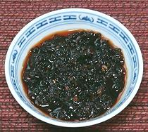
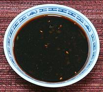
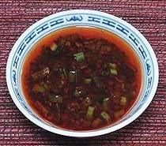
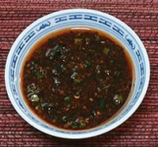

|

Chili Bean Paste Dip |

Chili Oil Dip |

Ciba Style Dip |

Quick Chili Dip |
These "Dips" are often used with soft to very soft Tofu, where they are spooned into a bowl of Tofu as desired. All these recipes are sized for a 4 ounce spice jar, though the Quick Chili Dip is only half, and the first two you may have to eat a little to get it all in.
|
1/3 2 1/4 1 |
c T c t |
Chili Bean Paste (1) Black Beans (2) Oil (6) Sichuan Pepper (3) |
|
|
3 3 3 1/4 |
T T T c |
Chili Oil(4) Chili Oil Sediment Soy Sauce Scallion Greens |
|
|
12 1/2 ar 3 1/4 |
T T c |
Red Chili, hot (5) Sichuan Pepper (3) Water Soy Sauce Scallion Greens |
|
|
2 1/2 2 3 3 |
T t T T T |
Chili Flake (7) Sichuan Pepper (3) Oil (6) Soy Sauce Scallion Greens |
|